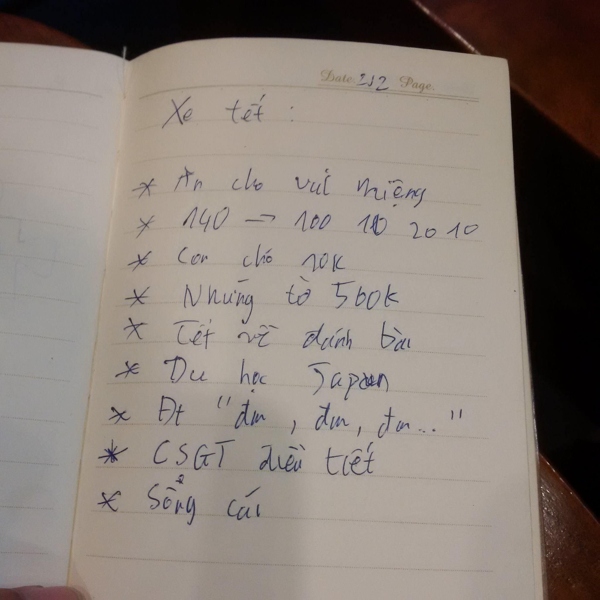

Trên chuyên xe về cố hương
Nằm trong tập Xuân Kỷ Hợi thăm cố hương
Một buổi sáng hai mươi tám Tết, tôi, một thằng lười biếng vác theo mớ hành lý lê bước ra bến xe để về quê. Đi qua một lô lốc phương tiện gồm hai tuyến xe bus và một cuốc xe ôm tôi đã đến được nhà xe. Nhà xe đông đúc và đầy những đồ đạc. Ngồi một tí thì tôi cũng được lên xe ngồi ở ngay băng ghế cuối. Bác tài đang đi lòng vòng ghi tên từng người. Giữa lúc đó, tôi nghe đầu xe có tiếng gì đó ồn ào nên ngó lên. Bác tài đang hỏi một cụ già "cụ đi mấy người". Cụ cứ trả lời "tui còn đứa con gái nửa chút nó ra". Thế là hai bên cứ hỏi qua lại vài bận. Ông quản lý nóng ruột nói "bác cứ ngồi một mình, khi nào con gái bác ra rồi tụi con xếp chổ cho". Cụ già đành ậm ừ xuống ghế đơn ngồi một mình. Bác tài bắt đầu đi ghi tên một lượt những người trong xe và xem lại mọi thứ một lần trước lúc khởi hành.
Xe bắt đầu lăn bánh, chạy bon bon trên đường Võ Văn Kiệt. Cảnh vật hai bên cũng nhộn nhịp không kém, đủ kiểu người xe, cộ ba lô, túi xách, thùng hàng đang chen chúc nhau. Cảnh tượng đó làm mắt tôi díu lại. Tôi lười biếng nhắm mắt và đánh một giấc khi xe vừa tiến vào cao tốc.
Đến giữa cao tốc tôi mới mở mắt ra một cách lười biếng. Nhìn sơ đội hình xung quanh mình gồm những cao nhân nào. Theo tôi nhẫm tính thì có khoảng hơn sáu con gà đó được bỏ trong giỏ đệm. Đúng chất một chuyến xe về quê của một thằng quê xứ đá gà. Buồn cười là tôi không có tí kiến thức gì về gà chọi cả. Hai ghế kế bên cử sổ là hai bác già tóc đã sương gió. Trong đó có một bác, tay cầm con Nokia đập đá, hiên ngang để chân lên đầu nệm của ghế phía trước. Ghế phía trước là một anh thanh niên cầm smart phone liên tục gọi thân mẫu mình qua điện thoại. Ngó sau kế bên tôi thì là một niềm tự hào của dân tộc, một đấng nam tử chính cống. Tóc undercut với hai bên bào nhẵn, áo sơ mi đen dài tay cài luôn nút ở tay áo, quần tây đen cùng một đôi dép lê đề chử Nike màu đỏ. Tay cầm một cái Samsung đươc cách điệu với những vết nứt trên mặt kính và được cắm tai nghe Apple trắng tuốt vào rất bảnh tỏn. Phía trước là một anh chàng cầm chiếc iPhone 6 đang hý hoáy nhắn tin cho "em yêu". Sau mỗi tin nhắn được gửi đi, anh chàng lại chuyển sang Facebook ngắm nghía các chị, các cô, các em và các cháu trong danh sách có thể kết bạn được Facebook trân trọng đệ trình. Mà lướt nhìn điện thoại của mọi người tôi chợt nhận ra hình như ở đây có hai loại điện thoại. Hoặc là phím hoặc là cảm ứng. Nhìn lại con Blackberry Classic của mình tôi chợt nhận ra một sự lạc quẻ bên trong nó. Nên tôi đành len lén cất vào túi để khỏi phải thẹn thùng.
Cuối cùng xe cung ra khỏi cao tốc và ghé vào một tiệm bánh mì, vịt quay ở đầu cao tốc. Đói bụng quá tôi bấm bụng phóng xuống xe đi mua bánh bao ăn dù giá tận hai chục ngàn. Vừa lê bước đi tôi vừa ôm khư khư cái ba lô như thể một thằng nhà quê lên tỉnh, dù trong đó chỉ có con máy tính cũ mèm sản xuất năm 2015. Mua xong, tôi phóng vội lên xe lại. Khi tôi bước lại lên xe thì trên xe đã đầy những người bán buôn nào là trứng cút, khoai lang, vé số... Đâu đó là những tiếng rao "Ăn cho vui miệng mà bà con cô bác". Rồi một lúc sau có một ông bác cầm một khay những con chó và ngựa lắc lư cái đầu qua lại nhưng vừa phê thuốc. Nhìn vào từng anh chị có đi với con nhỏ mà nói "mua cho con nó chơi nè mấy anh chị ơi". Nhưng chẳng một ai mảy may đáp lời, bọn nhóc đang cắm mặt vào những cái máy tính bảng to đùng. Lần trước, lần trước nửa tôi về quê đều thấy cảnh này. Tôi không biết phải làm gì cho ông ta ngoài việc quay ra cửa sổ để khỏi phải nhìn thấy cảnh tượng kia. Buồn cười thay, khi tôi nhìn ra cửa sổ thì cảnh tôi thấy tiếp theo lại là hình ảnh bà cô bán khoai khi nãy đang phóng qua đường với những chiếc khi công-tê-nơ, xe khách, xe tải ào ra khỏi cao tốc như thể kỵ binh hussar lao xuống trong trận Vienna hay là kỵ binh Vale lao thẳng vào quân đội nhà Bolton trong Game Of Thrones. Nhìn những điều đó tôi lặng đi đôi chút vì thật lòng tôi chẳng thể làm gì cho họ. Tôi hiểu họ khổ nhưng tôi cũng chẳng hơn. Khi mà giữa chuyến xe này tôi vẫn luôn nghĩ về một cái Tết mà cái đói, cái nghèo đang quay quắt lấy tôi. Giữa cái lúc hỗn độn ấy thì bác tài cất tiếng lên "lên đủ chưa bà con, thu tiền xe nha". Người được thu đầu tiên là bác già lúc nãy, có vẻ con gái của bác năm nay đã chọn ăn Tết ở đất Sài Gòn phồn hoa thì phải. Bác tài hỏi:
- Ra bến hay là rước ở đâu vậy bác?
- Tui ra bến cậu ơi
- Vậy một trăm tư nha bác.
- Đây nè chú - Bác rút ra tờ một trăm ngàn.
- Một trăm tư bác ơi - Bác tài xế cười đáp.
- Sau hôm qua tui đi lên có một trăm thôi mà. - Bà cụ nhem mắt đáp
- Tết tụi con lên giá bác ơi, nhưng mà bác đi lên thì bên con vẫn giữ giá cũ.
- Mới lên hôm hai tám thôi, phải bác về hai bảy là có một trăm rồi - Một lão buôn gà chọi tham gia vào.
- Nhưng mà hai mươi tám con gái tui nó mới được nghỉ mà...
- Thôi, một trăm tư bác ơi. - Bác tài xế giục
- Hai chục thôi được không cậu - Cụ chìa từ hai mươi ra. Mắt vẫn nhem nhem.
- Một trăm tư bác ơi - Bác tài xế vẫn tươi cười đón lấy tờ hai mươi ngàn và tiếp tục giục.
- Mười ngàn nửa nha
- Không được bác ơi, khổ lắm, con là tài xế thôi mà.
- Mười ngàn cuối nè cậu, tui cũng khổ mà...
- Dạ con cám ơn, bác ăn Tết vui vẻ nha, Tết mà bác, nhà xe lên giá chứ con làm tài thôi mà.
Bác tài xế từ từ đi xuống một lượt các hành khách. Cuối cùng bác cũng đi tới chổ tôi. Tôi đang lo phải tốn thêm mười ngàn nửa vì tôi đi xe ôm của nhà xe qua, vị chi sẽ là một trăm năm mươi nghìn. Thanh niên bên cạnh trả tiền trước tôi, cậu ta rút ra tời năm trăm ngàn mà sáng chói cả mắt tôi. Bởi lẻ trong túi tôi còn gom lại cũng chẳng có nói bốn trăm ngàn chẳn. Đến lượt tôi bác tài hỏi câu quen thuộc:
- Rước hay tự ra nhà xe em.
- Rước anh, đại học Khoa Học Tự Nhiên, Nguyễn Văn Cừ, quận 5. - Tôi đáp và chìa một trăm năm mươi nghìn ra.
- Một trăm tư, thói mười ngàn nha.
Tôi hơn sững người tí, vậy là tôi không phải trả mười nghìn tiền xe ôm. Một phép màu chăng? Một sự sai sót hoặc lẻ bác tài kia xưa cũng từng là môn sinh của ngôi trường cũ sì nằm bên đường Nguyễn Văn Cừ. Đã ra tay nghĩa hiệp với một thằng đàn em sa cơ lỡ vận trên đường quy hồi cố hương. Sau đó, bác tài đi đến người cuối cùng đang ngồi lướt điện thoại. Bác tài tươi cười hỏi:
- Tết về đánh bài há.
- Đánh chứ, còn mấy con gà Tết này quất luôn.
Vậy là xong việc thu tiền. Trả xong tiền xe thì tôi lấy làm vững dạ lắm. Ngồi cắm tai nghe vào mà nhìn xung quanh thôi. Trời lúc nay đang là hơn một giờ, nắng như đổ lửa, bác tài đưa xe đi đường tắt để tránh kẹt xe. Buồn cười là đường tắt cũng đông vô cùng nhưng bò một tí là ra được đường lớn. Đến ngã tư đèn xanh đèn đỏ, tôi đã thấy một anh cảnh sát giao thông cầm gậy quát một tài xế xe tải định cố chấp vượt đèn đỏ. Trên đoạn một trăm mét trước dốc cầu Rạch Miễu là những anh cảnh sát giao thông chạy long nha long nhong giữa trời nắng để điều tiết xe. Một hình ảnh khó mà thấy được ở trên Youtube hoặc cái fanpage ngàn like trên Facebook. Hoặc giả những hình ảnh này sẽ chẳng giúp ích gì cho những fanpage cần đủ like để đổi tên và những người đang buồn mồm không có gì để mắng nhiếc trên Facebook. Đúng thật là một cộng đồng nhộn nhịp phồn vinh, chẳng bù cho cái Twitter nơi tôi đang ngày ngày ngồi tweet ba thứ nhãm nhí. Vượt qua những rào cản thì xe cũng bon bon lên được cầu Rạch Miễu. Nhìn lòng sông cái mà tôi thấy nó thật to lớn làm sao, đúng là quê hương tôi đây rồi. Bờ kia là những rặng dừa trùng điệp, Bến Tre quê tôi...
Do đã lo xong mối lo tiền xe, tôi lại đánh một giấc. Tôi ngủ mê đến mức không để ý rằng xe qua cầu Hàm Luông khi nào. Chạy một tí cũng tới Ngã Ba Bền. Xe dừng đó để cho hai mái đầu undercut thời thượng xỏ đôi dép lê bước xuống xe. Trở về quê nhà mà trong những lời tán dương. Giống như những người dưới quê tôi, hiện đang du học Nhật Bản ngành xây dựng mà lúc nào cũng đăng clip lên Youtube cảnh công trường náo nhiệt. Bên dưới là những bình luận đầy tâm huyết với dân tộc "xem kỹ sư bên Nhựt Bổn người ta ra cả công trình để làm việc kìa, ai như bọn kỹ sư dốt đặc xứ mình toàn nhốt mình trong văn phòng mà nịnh nọt sếp!". Bên dưới là một loạt những câu trả lời ngắn gọi "hay", "chuẩn", "phải", "rất phải", "chí phải!". Đọc những dòng đó làm tôi giật thót người, vì tôi cũng trót mang trong mình tấm bằng cử nhân kỹ sư tin học, đại học Khoa Học Tự Nhiên, đại học quốc gia thành phố Hồ Chí Minh khoá 2012. Do nó quá dài nên tôi thường chỉ gọi là bằng cao đẳng Tự Nhiên cho gọn. Do trót được gọi là kỹ sư và cũng trót suốt ngày ngồi trong văn phòng mà lại còn trót dốt đặc nửa. Nên đọc những dòng kia làm tôi lấy làm áy náy lắm. Tôi đành bước ra khỏi văn phòng để bớt được một phần áy náy. Bước ra văn phòng tôi quẹt tay vào máy chấm công và lắng nghe câu nói lịch sự "xin cảm ơn"... Giữa lúc mơ màng đó, cha tôi gọi điện hỏi tôi tới đâu rồi. Tôi ngó ra cửa sổ và đáp lại rằng mình vừa qua chợ Ba Vát./p>
Lúc xe sắp đến cầu cây da thì tôi giật mình khi xe không vào bến mà phóng tót lên cầu. Tôi tờ mờ nhận ra có lẻ bác tài đã hỏi có ai vào bến không lúc nãy. Đương nhiên một thằng nằm ngủ khò như tôi đã không thể nào giơ tay được. May sau vừa xuống dốc cầu, thì lão buôn gà chọi xuống. Tôi cũng phóng tót theo. Sau đó, tôi xách mớ đồ trên người lững thửng bước về phía nhà xe. Vừa bước tôi vừa nghe nhạc. Bước được tí đã đến ngôi trường Trương Vĩnh Ký nơi tôi từng có ba năm ăn hại ở đó. Đúng nghĩa một thằng học dốt, nhà nghèo, dỡ thể thao và đương nhiên là chẳng em nào thèm ghé mắt. Tôi đứng lại vài giây trước cổng trường và nhép theo lời bài hát mà tôi đang nghe.
Đứng dưới bóng mát, đến đón em khi tan trường
Dáng cũ luyến nhớ đã cách mấy nắng mưa
Ôi trông nhau xa vời vợi
Anh kêu tên em, em mừng chẳng nói nên lời...
Đi đến nhà xe cuối cùng tôi gặp cha mình đang chờ ở đó. Cha đưa tôi về nhà. Chạy chiếc xe wave cũ kỹ trên những con đường đầy cát và bụi. Tiếng nhạc vẫn âm ĩ bên tai...
Còn yêu anh như khi chúng ta mới yêu thương nhau
Ngại đôi khi bão táp đã khiến núi sông cách ngăn cho em thay lòng
Tình ly tan cho ước thề mộng cũ phai tàn.
Những thứ tôi ghi vội khi ở trên xe:
